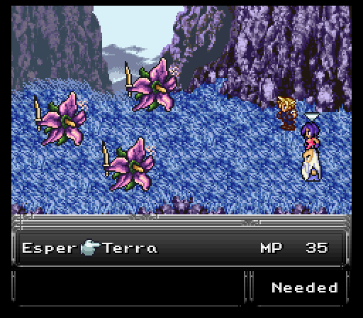
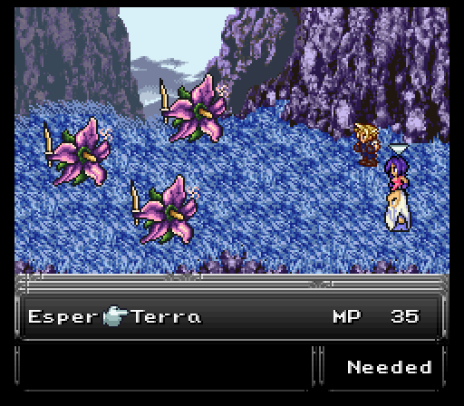
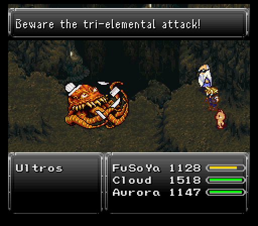
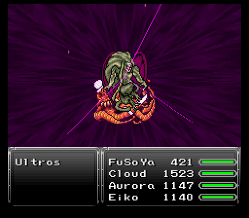
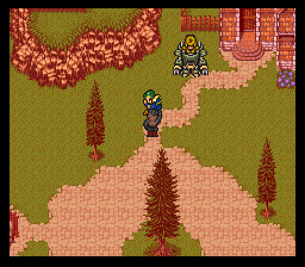
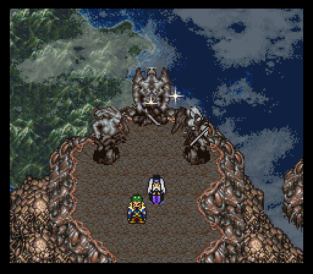

Part 17: Who Let the Kefka Out
Solace Cavern:
Considering we didn't go over the monsters outside earlier, let's do that now.
Grassland:
- Ammonite - Fire spells, Tentacle, Giga Volt.
- Ankheg - Has a petrifying special attack. If the last alive can counter with Absolute Zero or Cyclonic.
- Runewing - Iceara, counters magic with Shock Wave.
Forested area:
- Sleepysaur - They start the battle asleep. Can use Inferno. Uses Sun Bath on themselves after some time. Weak to ice.
- Hydra - Rare encounter. They hit hard, absorb the common elements, have a lot of hp and can use Cyclonic and Aqua Breath. Has a special attack that can freeze the target, and has a 1/3 chance to counter magic with it. Defeating them will earn you a hefty amount of exp and spell points. You can steal Gold Helms and Mithril Mails from them.
Time to check out the Solace Cavern. If you exit Lunaris, you'll see the entrance just to your north, but you'll have to circle around the mountains to reach it.

There's a chest with a large sum of gil off to the left as soon as you enter. The enemies aren't too nasty in the caves save for two exceptions, both of whom are seen in the few areas outside, Hotheads and Kablooms.
Although there is a formation of just one, Hotheads always seem to show up in pairs along with a pair of Bombs and can't be run from which makes their gimmick all the more nasty. They do have some good personal damage, but they also love to use White Wind which heals the party for an amount of hp equal to the caster's current hp. Since they have 4k+ hp and the Self-Destruct the Bombs use does damage based on their remaining hp...yeah, you can see where this is going. This formation kicked my ass hard the first time.
This time though? I found my trump card...Hotheads can be struck by Hex. Do this and they become sitting ducks who can't use any annoying moves. You do want to get one to use at least one White Wind since that's a new Arcane spell for FuSoYa.
 

Kablooms aren't bad...until they start countering with Giga Volt for 1500+ damage. But they are susceptible to being silenced, so having Terra (esper) equipped and using her Lunatic Voice spell solves that problem. Also, if there is just one of them left and enough time has passed, they'll chuck a Shuriken at you, which will most likely result in a KO...so try to take them all out at once.
Other new monsters are:
- Floormaster - Can use Rock Slide, which hurts like hell. If last alive will get haste and Seize a random party member.
- Gigaspede - Corrosive Acid and Revenge.
- Beholder - Rare encounter. High level, but by itself not dangerous. Uses Storm.
The dungeon is pretty linear until you reach a few golden idols. These depict the Statues that house immense magical power and would destroy the world if an evil hearted person got their hands on it. The espers could have very well been attracted to the power even the lowly gold idols radiate so more exploration is at hand.
(You can search the idols for some extra story beats.)
The problem? Octopus royalty comes charging in out of nowhere! Ultros wants the statues for a very silly reason...to get Majin Buu's attention and rule over the world with him. Sir, I think Majin Buu would sooner blow the planet up then rule over it. Just saying!
But of course, are our heroes going to let him get away? Of course not!
As per usual, Ultros gets a rather silly look and battle theme. Chef Boyarultros, anyone? Unlike the last two battles though, he's got some dangerous attacks to watch out for. Not at the start though since other than his physical strikes and Splash counters, he doesn't do much of anything besides inch closer and use Tentacle, with the occasional Rock Barrage.
However, after receiving enough damage, his next turn consists of buffing himself with Haste and Protect, then deciding someone needs to die because his next attack skill is Rock Slide which deletes someone for 2300+ damage.
If Ultros were to make it all the way up as to being right in front of the party (8 steps), he would then use Flood or Revenge and return to his starting position. But as we continuously attack him he moves back, so as long as we stay aggressive he never really gets a chance to move all the way up before loosing enough hp and going into his next stage.
He'll also use Cursed Breath after some time. This targets a single character, but you wouldn't expect that due to the animation implying it oughta hit everyone...and thank god it doesn't because the target gets nailed with multiple status ailments like poison, sleep, and pig.
Finally, after being attacked by magic a few times he'll glow red...from then on he'll counter any fire, ice, or lightning spell with a corresponding tier 3 elemental spell. Without protection, this can rival Rock Slide in damage. This still leaves other spells open to use though, such as Virus or Drain.
After beating on Ultros for a while, someone interrupts the battle, though it should be no surprise who it is considering she's been following behind the team since they've entered the area. It's none other than Eiko and she wants to...ahem..."play" with Ultros. He rejects at first, but gets shown up by a piggified Aurora and told to get his ass kicked because that's what will happen to him after.
So, what does he do to me? Double attack Eiko before she can do anything and knock her out. Lousy octopus jerk! It takes a bit before I can get her up, healed, and sent to the back row. From there, she uses her Summon ability to call forth Madeen and instantly send Ultros packing.
After the battle, she basically outfoxes FuSoYa and gets to join the party. Partly because sending her back alone with the monsters about isn't the brightest of ideas and partly because she's one of the best characters in the game. Why? Her Summon command. With it, she summons whatever esper she has equipped. Seems plain at first, right? It is...until you realize Eiko can summon the esper an infinite amount of times so long as she has the mp available to summon it.
For now, Eiko's gonna hold on to her initial esper, Madeen. Teaches the tier 2 fire/ice/lightning spells along with two new spells, Quake and Gravity. She also comes equipped with a Serpent Rod, which can proc Plague.
The rest of this dungeon involves falling down holes and collecting treasure. Don't take the hole nearest the save point since that leads to the end of the dungeon, but do take the other two to reach an Omni Elixir, Skelly Suit, and Ghost Suit.


Chaos reigns:
The team does find espers and they seem poised to attack at first, but local earth esper Titan stops anything from actually happening and instantly recognizes Aurora as being Olorin's daughter. Everyone, esper and all, eventually return to Lunaris and a peace treaty is formed between Leo and the espers so all's good, right?

Wrong. Kefka's clown act comes rolling into town and Kefka himself starts ordering explosions and backstabbing friends and foes alike, up to and including Leo himself. Leo does not take this kindly though because after waking up from being knocked out, he goes on the offensive to stop Kefka. Unfortunately Kefka manages to outfox Leo and gravely injure him. Not enough for Leo to do a Self-Destruct styled final blow. That's it, game's over for Leo!
Kefka just gets up like nothing has happened to him, then proceeds to start turning every esper in the area to magicite. Even the horde of espers coming from the Dimensional Gateway get turned into magicite. Unlike vanilla where he was implied to just be collecting magicite, he's actually absorbing it all into his body. He then laughs as the screen fades to black.
The next scene involves everyone in a moment of silence at Leo's grave, then Oboro's dog Ace comes in very wounded, but not dead. Eiko vows to patch him up since it seems very likely that Oboro is now dead too. Could this day get any worse?
Thankfully, there are some survivors....Otis and the gang. They arrive in Lunaris to tell everyone what we all saw coming from the opposite side of the universe...Gestahl betrayed everyone and now he's gonna be able to go into the Dimensional Gateway to the esper world and find what he's been looking for...those statues mentioned last segment.

Also...the day gets worse. Gestahl's not the one to be fearing, but rather Kefka. FuSoYa was knocked out pretty fierce, but not enough to hear Kefka's laugh...except for the fact it's a laugh FuSoYa is all too familiar with. Considering this is his first time encountering Kefka, it's becomes painfully obvious what this means.
Kefka is none other than the reincarnation of the demon the Heroes of Light sealed away 1000 years ago, Zuriel. Things have just hit rock bottom...and it's about to get much worse sadly.
After hopping back on the airship, the world moans in pain because a portion of the planet gets ripped out of the ground to become what will be the next major dungeon. Gestahl and Zuriel (but Gestahl doesn't know Kefka is really a resurrected demon from the past) are on the continent with the three magical statues of lore and no doubt plan to use them to cause trouble.
Something else interesting to note about the statues...in earlier versions of the mod, the three statues were those of Exdeath from Final Fantasy V, Cloud of Darkness from Final Fantasy III, and Zeromus from Final Fantasy IV.
In this version? Zeromus as a statue doesn't exist, but in its place is the one winged angel from Final Fantasy VII himself, Sephiroth. Just great!
Regardless of Sephiroth coming back as a statue, the danger is certain. If those statues get moved out of alignment, one of them is going to divide the new alignment by zero and cause a magical outpouring that's going to completely annihilate the planet. We're going to have to haul ass up to where Gestahl and Kefka are fast.